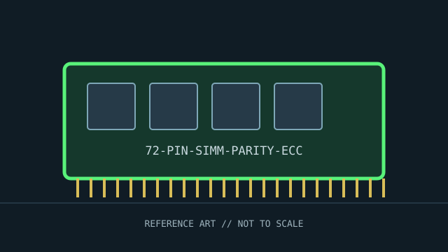

[ INDIVIDUAL COMPONENT // MEMORY / RAM ]
72-pin SIMM, 36-bit parity organization
72-pin SIMM parity module variant. This record identifies a distinct product or standards-defined module class; specifications not verified for this exact identity are deliberately left open.

IDENTITY: 72-pin SIMM, 36-bit parity organization is cataloged as 72-pin simm module organization variant. Standards entries describe a module class; named manufacturer entries describe one SKU. Do not treat them as interchangeable records.
Recorded specifications
| Catalog identity | 72-pin SIMM, 36-bit parity organization |
|---|---|
| Record type | 72-pin SIMM parity module variant |
| Verified specifications | 72-contact SIMM form factor; many PC modules provide 32 data bits plus a parity bit per byte (36-bit organization). Some systems implement parity detection; ECC capability is platform- and module-organization-specific and must not be presumed from a 72-pin edge connector. |
| Compatibility | Check whether the motherboard requires 32-bit non-parity or 36-bit parity modules, bank width, supported DRAM density, and parity/ECC chipset support. 72-pin SIMMs install at an angle and latch upright; follow board instructions. |
| Unverified/variable details | Only values supported by the cited standard or manufacturer source are stated. Confirm exact part number/revision, SPD, ranks, timings, and voltage on the specimen when not specified above. |
Platform compatibility and service
- Check whether the motherboard requires 32-bit non-parity or 36-bit parity modules, bank width, supported DRAM density, and parity/ECC chipset support. 72-pin SIMMs install at an angle and latch upright; follow board instructions.
- Before installation, record the full label, manufacturer, part number, revision/date code, contact condition, chip markings, and SPD contents where present.
- Use ESD precautions, handle the module by its edges, and never force it into a slot with different keying. Power down and follow the host’s service manual.
- For server/ECC modules, confirm CPU support, buffering type, channel population, supported ranks/densities, and firmware behavior; physical fit is not proof of ECC operation.
Archival and service notes
Parity and ECC are not synonyms: a parity SIMM does not provide multi-bit error correction. Catalog actual chip count/organization and board support rather than labeling every 36-bit SIMM “ECC.” Photograph both sides before cleaning; retain the host manual, SPD dump, test host, BIOS revision, and memory-test result with the catalog record.
Sources & further reading
- IBM PC technical references — Bitsavers archiveArchival primary manuals for system-specific memory bank and parity requirements.
- PC Guide — SIMM referenceHistorical secondary overview; use the host system manual to verify parity/ECC support.
Manufacturer source identifies the named SKU where provided; standards pages describe a generation or module class. A source-family page may not capture every revision. Check the precise specimen and platform service documentation.